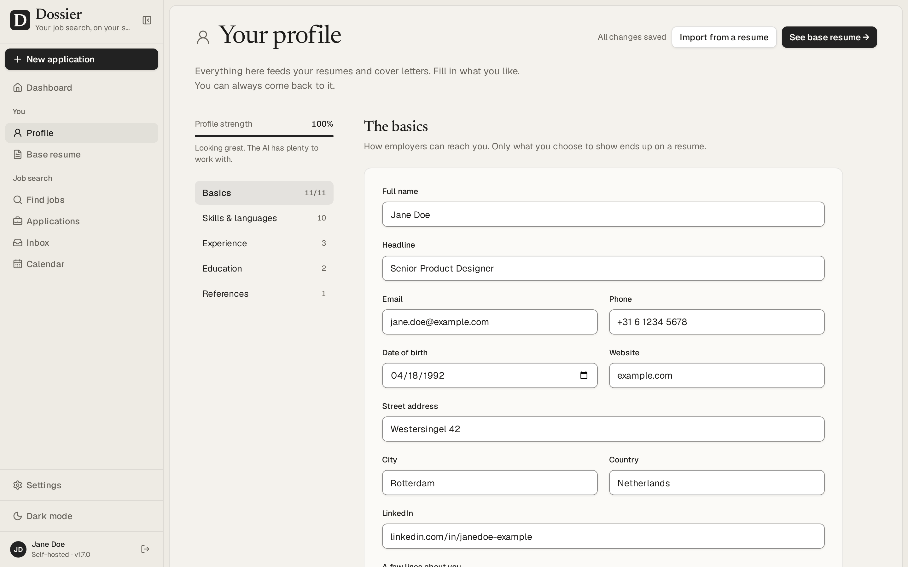
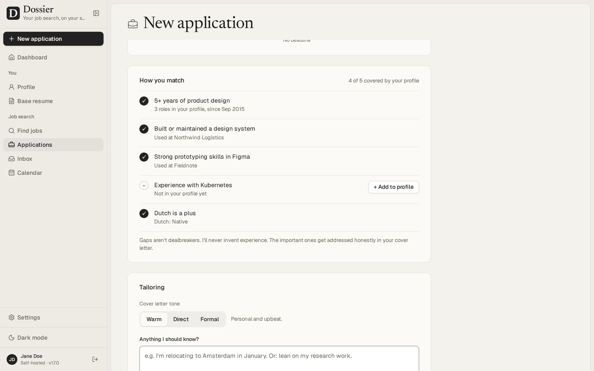
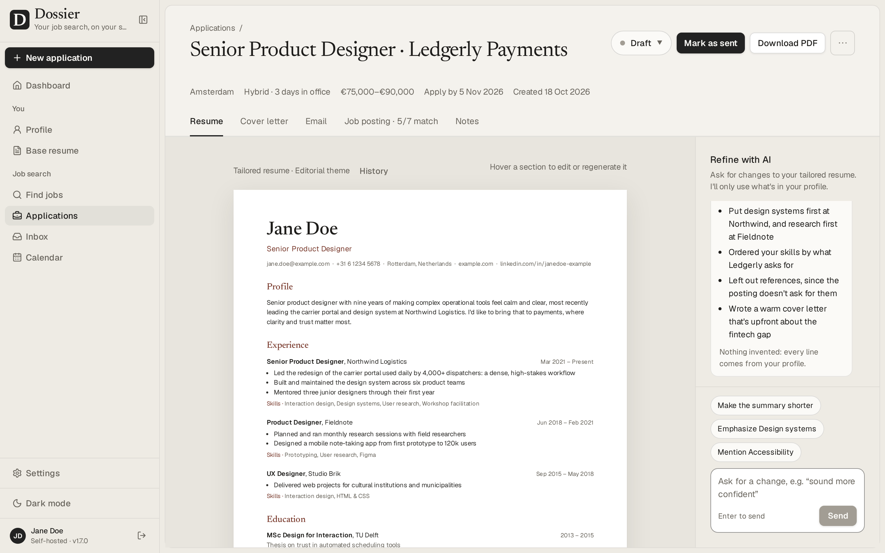
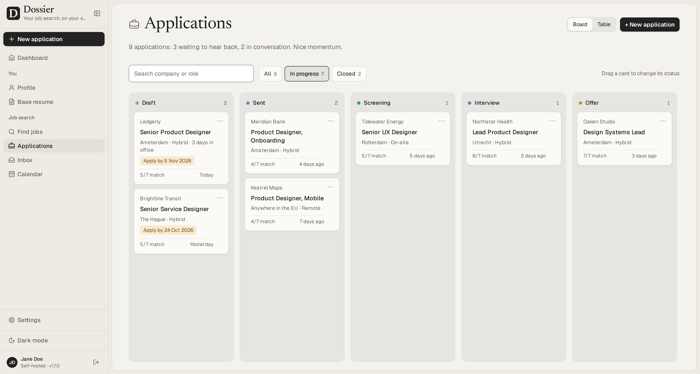

Dossier: organise your job search in one place
Dossier is an open-source app that turns your career profile and a job posting into a tailored resume and cover-letter draft, then helps you track the application.
Its main purpose is to keep your profile, job requirements, documents and application status together, instead of starting from scratch for each role. It also offers job-source searches and hiring-startup discovery.
You run it on your own computer or server and choose an AI model. The software is free under AGPL-3.0; hosting, AI APIs and some job sources can cost extra. It is designed for a laptop or desktop, not a phone.
Review every generated claim before using it. Local models and hosted models have different data flows. Its scheduled job agent does not send applications automatically; optional Gmail sending requires confirmation.
Sources checked 24 November 2026. AiCoN has not tested the app hands-on. Images and video below are official demos with fictional data, not AiCoN test results.
Official website Source code & setup
What it looks like

Official demo screenshot: Keep career details in a reusable profile. Fictional Jane Doe data. Source: AienTech/Dossier repository, checked 24 November 2026. Tap for the native-resolution original.

Official demo screenshot: Compare a job posting with the profile and see missing requirements. Fictional Jane Doe data. Source: AienTech/Dossier repository, checked 24 November 2026. Tap for the native-resolution original.

Official demo screenshot: Review a tailored resume and refine the draft in chat. Fictional Jane Doe data. Source: AienTech/Dossier repository, checked 24 November 2026. Tap for the native-resolution original.

Official demo screenshot: Track applications from draft to offer on a board. Fictional Jane Doe data. Source: AienTech/Dossier repository, checked 24 November 2026. Tap for the native-resolution original.
Official demo video
Watch the official installation and product tour on YouTube.
Official 26-second project demo, converted from the repository GIF. Fictional data and a stand-in AI server were used. This is not a speed benchmark or an AiCoN hands-on test. The longer official YouTube tour also discloses test-server AI responses.